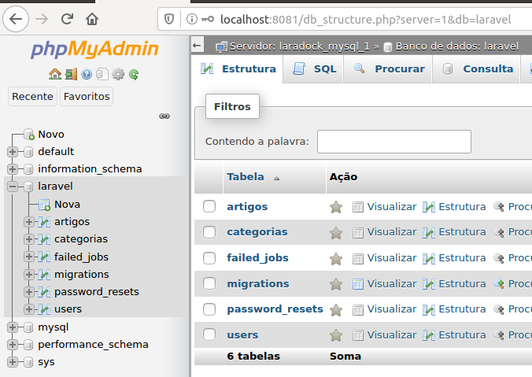

O laravel utiliza a arquitetura MVC, isto é, Model, View e Controller. Models são responsáveis pelas iterações com o banco de dados. As Views são responsáveis por exibir estes dados na tela, e os Controllers são responsáveis por implementar e controlar o uso de ambas.
Criaremos neste projeto uma classe Controller para cada tabela que criamos. Dentro de app/http/Controllers/Auth você pode ver que já existem as controllers responsáveis pela realização da parte de autenticação do usuário. Um nível acima você vê o arquivo Controller.php que é o controller inicial da nossa aplicação. Ele controla o que acontece quando acessamos a página inicial do site. Criaremos então as controllers de Artigo e Categoria que serão chamadas quando acessarmos no browser por exemplo http://meusite.com/artigo e http://meusite.com/categoria.
No terminal já dentro do bash do laradock execute:
Isto criará dois arquivos dentro da pasta App/Http/Controllers com os nomes informados acima.
Primeiro trabalharemos com o CategoriaModel.php. Dentro desta classe temos 7 funções padrão, que são:
Acesse o bash da workspace do laradock, isto é, acessar o terminal da máquina virtual laradock:
Você verá que o terminal ficou parecido com isso:
Acesse a pasta do projeto:
Criaremos as models Categoria e Artigo. Usando o -m no comando serão criados também as migrations.
As Models são a camada de abstração dos dados do banco, ou seja, são as classes que se conectam com o banco para fazer e recuperar registros:
Tudo quase pronto. Após estes comandos você pode reparar que na pasta app/ do projeto há um arquivo para cada uma das tabelas criadas, e na pasta database/migrations/ também. É nos arquivos da pasta migrations que iremos trabalhar!
Dica: É normal o nome do arquivo migration possuir uma data de criação, é dessa forma que o laravel adminstra a criação de tabelas para criá-las na ordem certa, então não altere os nomes destes arquivos.
Abra o arquivo create_categorias_table.php. Na função up() deixe como abaixo, acrescentando os seguintes campos:
Abra o arquivo create_artigos_table.php. Na função up() deixe como abaixo. Note que aqui temos um campo FK(Foreign Key) que faz referência ao campo id, isto indicará a qual categoria o artigo pertence:
Salvamos os arquivos e para finalizar a criação das tabelas executamos o comando no terminal:
Se tudo estiver ok, ao acessar o phpMyAdmin você verá as tabelas criadas:
